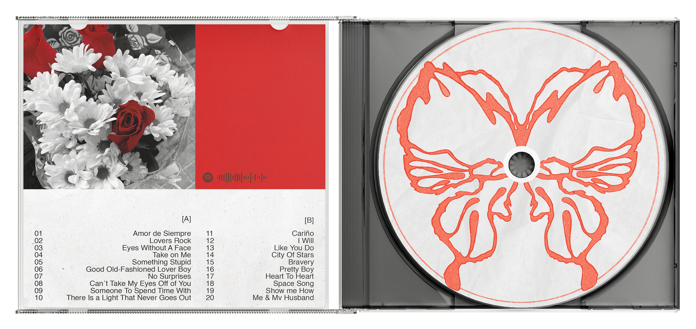
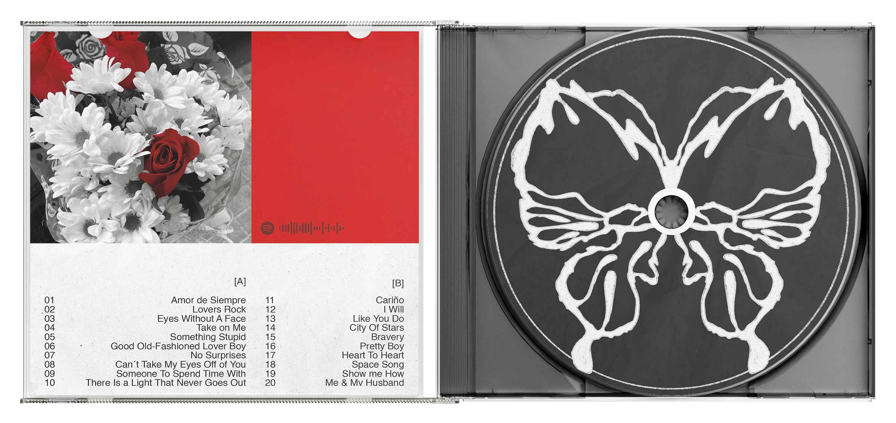
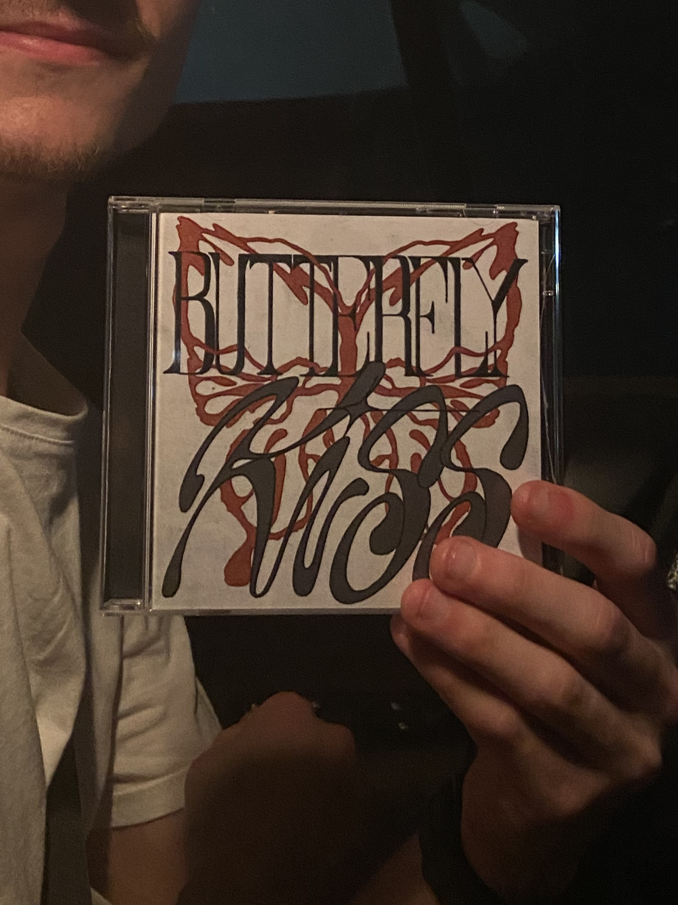
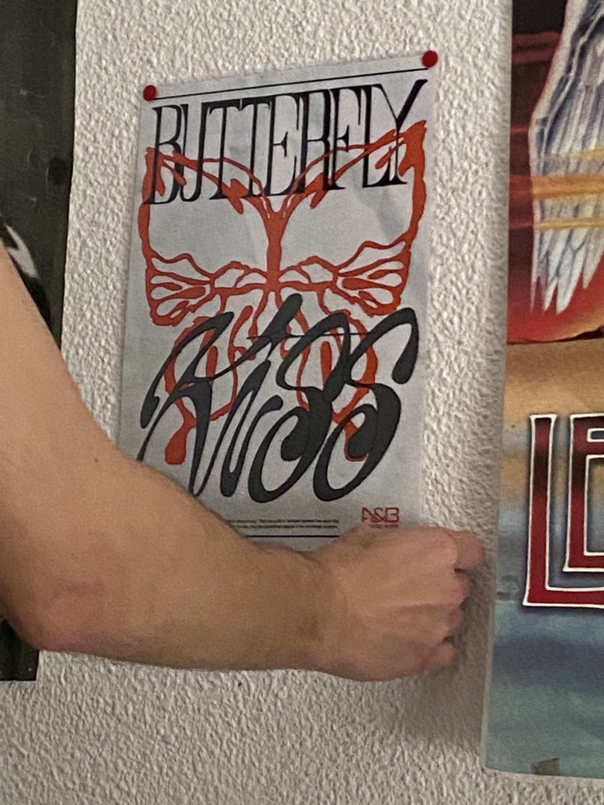
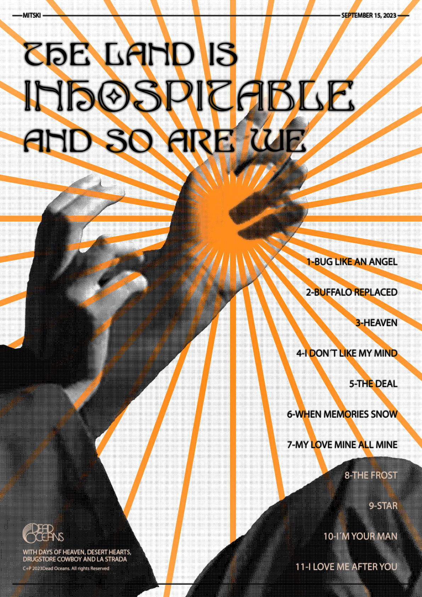

Butterfly Kiss
El beso mariposa, un gesto de amor que se produce cuando agitas tus pestañas cerca de las de tu pareja. Con este concepto como base nace este proyecto, realizado el día de San Valentín para mi persona favorita.
Butterfly Kiss
The butterfly kiss, a gesture of love that happens when you flutter your eyelashes close to those of your lover. With that concept as a base, this project was realized on Valentine's Day for my favorite person.






Poster design
Serie de posters inspirados en artistas/canciones que me gustan. En ellos predomina el uso del efecto mapa de bits, texturas varias y tipografías de diversos estilos.
Poster design
Set of posters inspired from artists/songs that are my favorite ones. In them prevails the use of the bitmap effect, different textures and diverse styles of typographies.



Polvo Gris
Portada encargada para el EP de Polvo Gris.
Me pidieron ilustrar una figura bailando en un ambiente de ruido y humo, reflejando así el estilo post punk de su música.
Polvo Gris
Commissioned cover for the Polvo Gris EP.
I was asked to illustrate a character dancing in a noisy and smoky environment, showing the post punk style of their music.